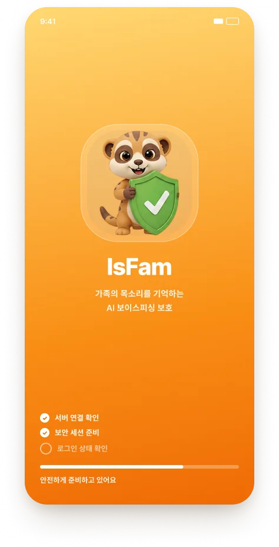
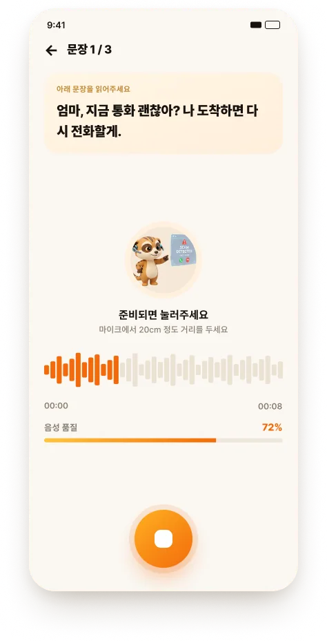
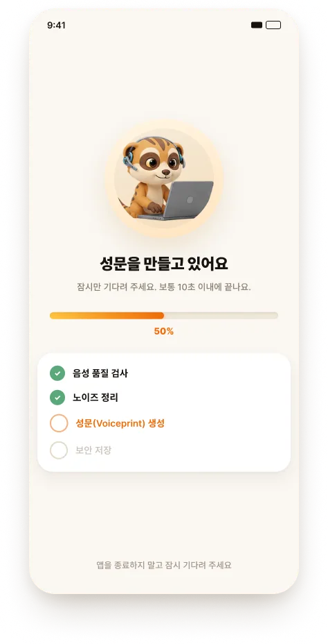
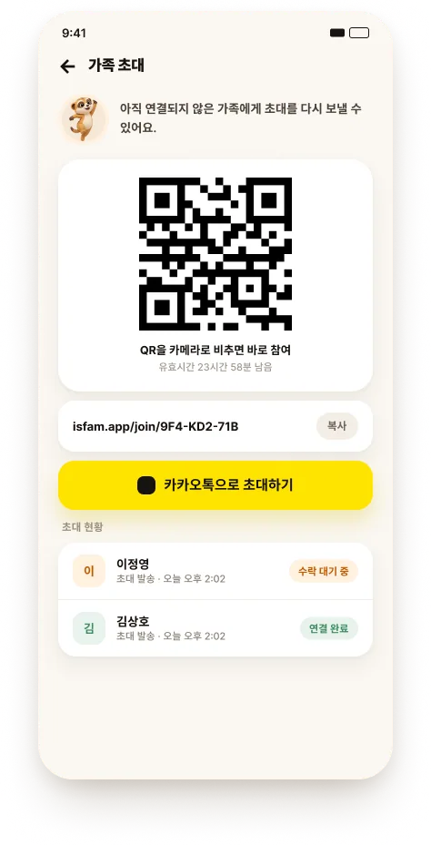
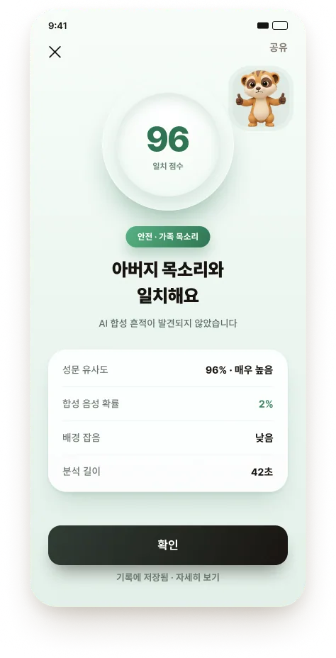
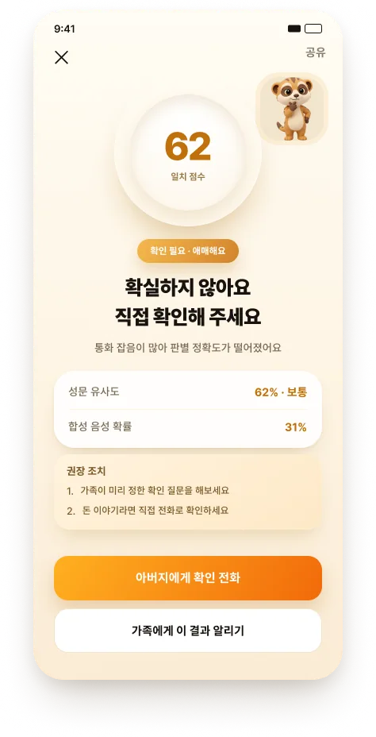
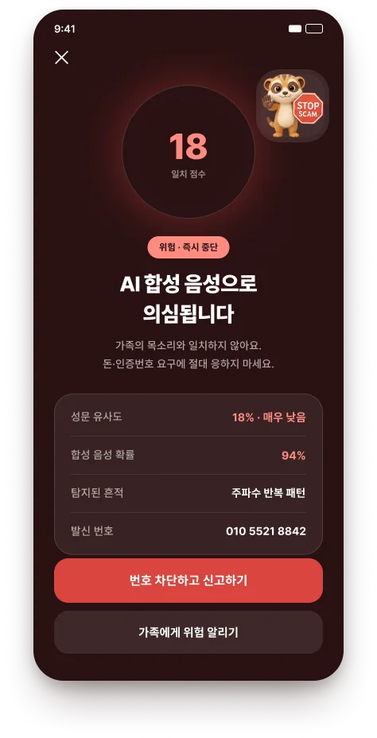

가족의 목소리를 사칭한 딥보이스 전화, 이제 귀로는 구별할 수 없습니다. IsFam은 통화가 끝난 뒤 10초 만에 진짜 가족인지 판별해 알려드립니다.
우리 가족 통화 보호 켜기
두 음성을 듣고 선택해 보세요. 실제로 대부분의 사람들이 구별하지 못합니다.
같은 연령대의 구별 실패율과 비교해 보여드릴게요.

평소 말투로 문장 3개만 읽으면 됩니다. 20초면 끝이고, 이게 나만의 목소리 지문이 됩니다.

녹음은 앱이 알아서 정리하고 암호화합니다. 원본 목소리는 저장하지 않아요 — 되돌릴 수 없는 형태로만 남습니다.

카카오톡이나 QR로 초대장을 보내세요. 받은 가족은 링크 한 번만 누르면 연결 완료입니다.
애매한 점수 대신 색상과 행동 가이드로 알려드립니다. 아래 세 가지 상태를 눌러 실제 화면을 확인해 보세요.

등록된 가족 목소리가 확인되었고 합성 흔적이 없습니다. 알림 없이 기록에만 남습니다.

목소리는 닮았지만 복제 흔적이 남아 있습니다. 저장된 번호로 다시 통화해 보세요.

등록된 가족의 목소리가 아닙니다. 차단과 112 신고까지 그 자리에서 도와드립니다.
위험 통화 기록과 차단 번호가 가족 전체에 바로 공유됩니다. 같은 번호가 또 걸려오면 이번엔 가족 누구도 속지 않습니다.
등록된 가족 목소리와 방금 통화를 대조합니다. 사람 귀로는 못 잡는 미세한 차이까지 읽어냅니다.
목소리가 닮았어도 소용없습니다. AI가 만든 소리에만 남는 흔적을 따로 찾아냅니다.
녹음 원본은 등록 직후 삭제합니다. 되돌릴 수 없는 형태로 암호화해서만 보관합니다.
내 목소리를 먼저 등록하고 가족을 초대해 보세요. 링크 한 번으로 쉽게 연결되어 우리 가족을 함께 지킬 수 있습니다.
우리 가족 통화 보호 켜기